How I Develop a C Application That Interact With Flathub Spotify Without Any Third Party Dependency
rustfeo891
Introduction
In this blog I will talk aboout how I develop a c program that can interact with flathub spotify with only libc and syscall without any third party dependency
How it work
To understand how this work there are few thing that you need to understand which is
- dbus
- syscall
- socket
To begin with let explain 1. dbus first, a dbus is a ipc communication for different process, in total it have two diffferent bus a system bus and a session bus,for the purpose of interacting with flathub spotify we only care about the session bus,so what is a session bus a session bus is used for the communication between a user process to the application process.So let take a look at how this thing really work by using a tool call qdbus ,qdbus is a tool that can show and interact the dbus on your own system ,we can use qdbus by simply typing qdbus on the command line and it show the dbus interface like this
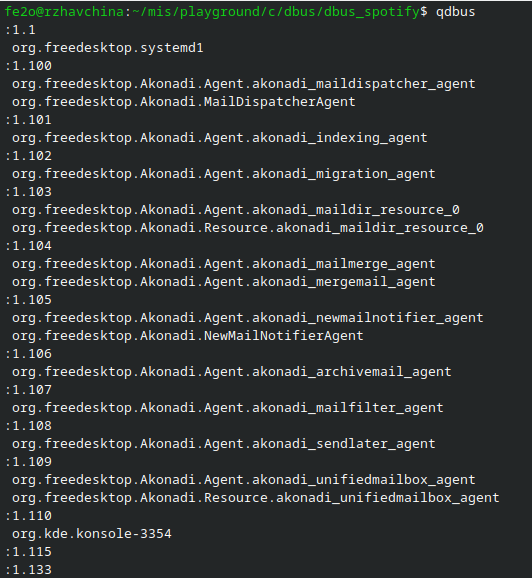
let look at the first line of the qbus output org.freedesktop.systemd1 as I mention before this is a dbus interface,and for every dbus interface it will have it own method and property we can take a deeper look to org.freedesktop.systemd1 method and property by typing qdbus org.freedesktop.systemd1 on the command line
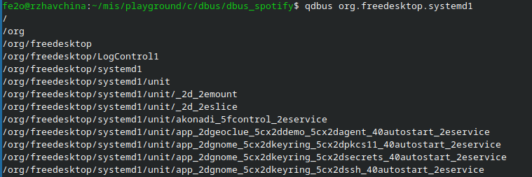
we cane see a bunch of /org/xxx these are called object path,because when dbus sending signal between two process it doesn’t just send the signal to the whole application it just send the signal to one specific object so we need to know the object path to send the signal to the object we want so let try to introspect the object path /org/freedesktop which is second line of the output let type qdbus org.freedesktop.systemd1 /org/freedesktop on the command line
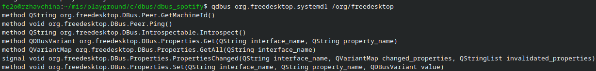
from the above output we can see different method that we can call let try to call the org.freedesktop.DBus.Introspectable.Introspect() method which we can see will return a QString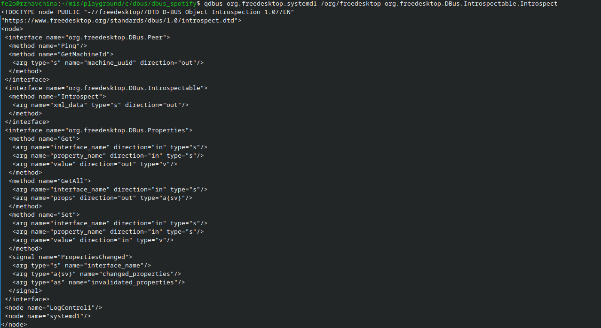
so we can see when we call the intospect method we get a bunch of string so baiscally that all you need to know for dbus which is that a dbus has a interface,method and object path and we can introospect it by using qdbus I will not dig deeper into dbus as these info are altready enough for you to understand how my c program work.If you want to learn how dbus really work you can take a look at the dbus doc https://dbus.freedesktop.org/doc/dbus-specification.html it have a really good explanation of what dbus actually is
With this new found knowledge let take a look at the spotify dbus
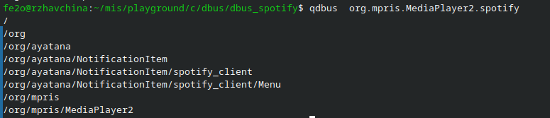
In this project we don’t menu and notification we only care about the song playing feature so let introspect the object path /org/mpris/MediaPlayer2 by typing qdbus org.mpris.MediaPlayer2.spotify /org/mpris/MediaPlayer2 and we get this:
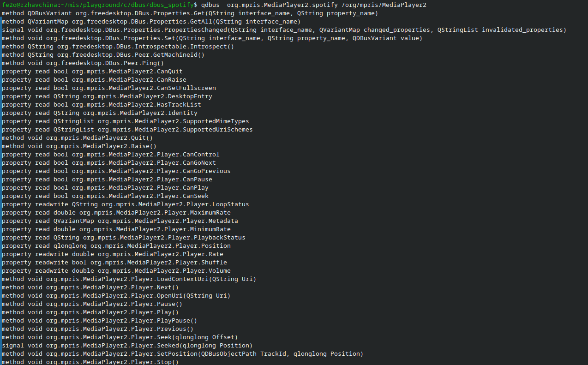
In these list of method we only care about
- method void org.mpris.MediaPlayer2.Player.Next()
- method void org.mpris.MediaPlayer2.Player.Pause()
- method void org.mpris.MediaPlayer2.Player.Play()
- method void org.mpris.MediaPlayer2.Player.Previous()
- method void org.mpris.MediaPlayer2.Player.Stop()
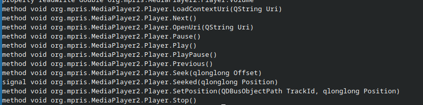
The idea is that if we can invoke these dbus method in c then we can controll spotify,normally people will use a library to do that but actually we don’t even need a library to achieve that.And these is why we need syscall to do that.
Let inrtoduce what is a syscall. A system call is a mechanism that allows a user program to request a service from the operating system kernel. Programs use system calls when they need operations that require OS control or privileges, such as reading a file, creating a process, allocating memory, or communicating over a network. Basically syscall is just that a program makes a request, the CPU switches to kernel mode, and the operating system performs the operation and returns a result for the program.
So how can we know what syscall do a program perform well we can use strace to do that so let say we have a c program like this:
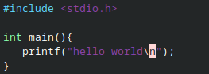
and we compile it with gcc
and we can know what syscall do hello program call by typing strace ./hello on the command line we can see
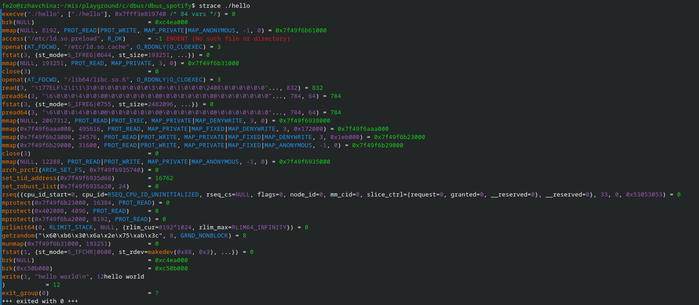
the only thing we care about is the write syscall
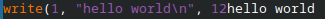
we can see that the hello program actually use write syscall to print “hello world” on screen.
One thing to notice is that we don’t need to remember all the syscall to understand the strace becaus in linux we have something call the manpage if you are in linux you can use man 2 write to get more info about the write syscall
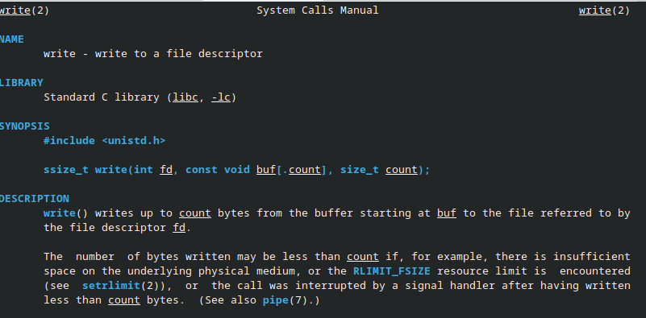
By looking the man page we know that write(1, “hello world\n”, 12) mean that the write syscall will write to standard output(which is file desc 1) and it will write “hello world” to the standard output and the ouput length is 12.
So if you want to look up for any syscall that you have no knowlegde about you can type man 2 “syscall” or just look it up at google.
Well so how syscall and strace related to my c program? Simple we know that qdbus can invoke the spotify dbus method if we know what syscall do qdbus use to do that and we use those syscall in c then we can controll spotify so we just need to strace qdbus invoking the spotify method to know what syscall we need
we can do this by typing:
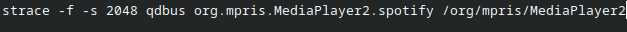
the -f mean trace the child process and -s specific the length of strace output because if the output is really long it will become …. and we cann’t see the actual thingSo what syscall do we need to look for?
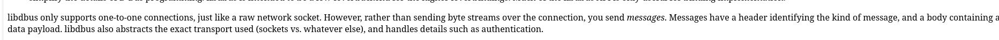
Well there is a clue at https://dbus.freedesktop.org/doc/dbus-tutorial.html we see that it mention:
“libdbus only supports one-to-one connections, just like a raw network socket. However, rather than sending byte streams over the connection, you send messages. Messages have a header identifying the kind of message, and a body containing a data payload. libdbus also abstracts the exact transport used (sockets vs. whatever else), and handles details such as authentication. "
Which imply that dbus use socket to do thye ipc lett loomk for the socket syscall
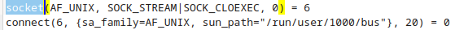
now we find:
socket(AF_UNIX, SOCK_STREAM|SOCK_CLOEXEC, 0) = 6
connect(6, {sa_family=AF_UNIX, sun_path="/run/user/1000/bus”}, 20) = 0
from man 2 connect we know that:
int connect(int sockfd, const struct sockaddr *addr,socklen_t addrlen);
so the first arg of connect is the file desc
and the second arg is the socket address
and the third arg is the address length
let google what do the socket address “/run/user/1000/bus” mean
I find a debian forum: [Solved] so what is run-user-1000 ?? https://forums.debian.net/viewtopic.php?t=157687
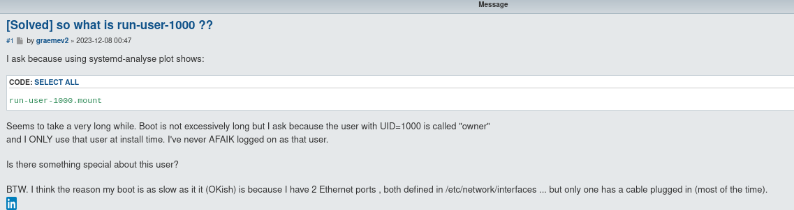
It seem that this is a temporary path made by the system for dbus and the 1000 is the uid for owner great!
let write the same thing in c:
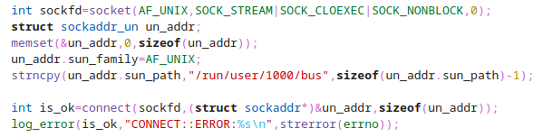
let look at the next strace:
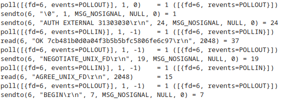
we see
poll([{fd=6, events=POLLOUT}], 1, 0)
which mean that we are going to tell the kernel we to watch the socket and notify the program that when writing data it will not block then we do the write:
sendto(6, “\0”, 1, MSG_NOSIGNAL, NULL, 0) = 1
sendto(6, “AUTH EXTERNAL 31303030\r\n”, 24, MSG_NOSIGNAL, NULL, 0) = 24
under the example section of https://dbus.freedesktop.org/doc/dbus-specification.html:
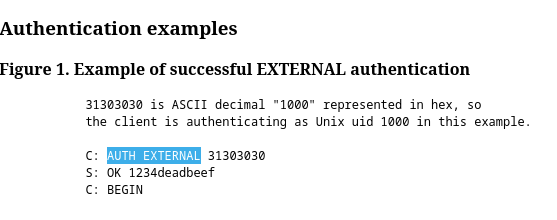
we can see that this mean the client is authenticing as Unix uid 1000 (the 31303030 mean 1000)
and I will skip the syscall after
sendto(6, “AUTH EXTERNAL 31303030\r\n”, 24, MSG_NOSIGNAL, NULL, 0)
you con consult the doc yourself to understand
what do those send to mean
again let translate those syscall in c again
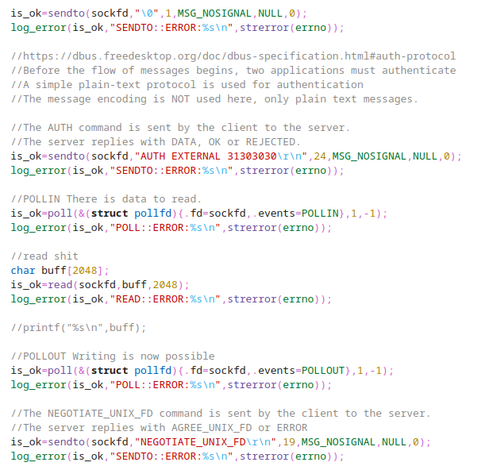
So that is what we need to do We look at the strace log and translate them in c keep repeating this process then we will get a program that can controll spotifiy without any third party dependency I will not do any further explanation with this new found knowledge you can try out the rest by yourself